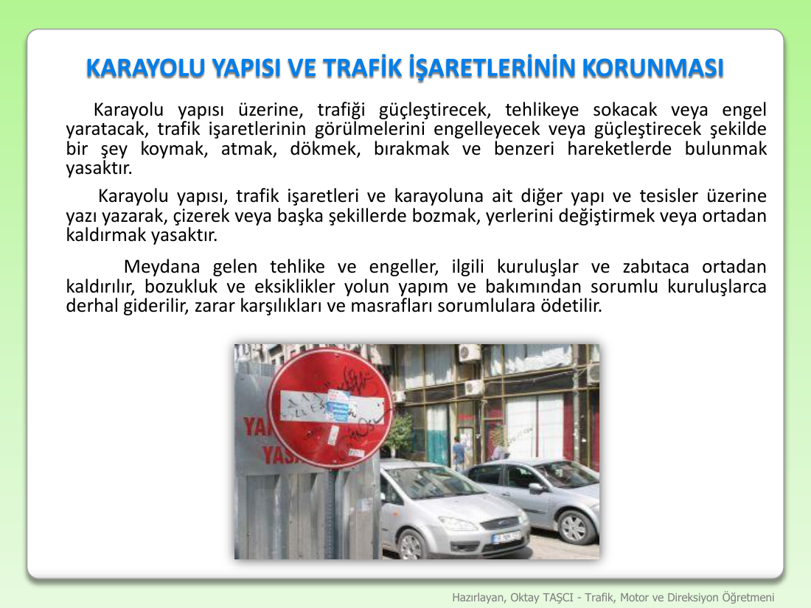
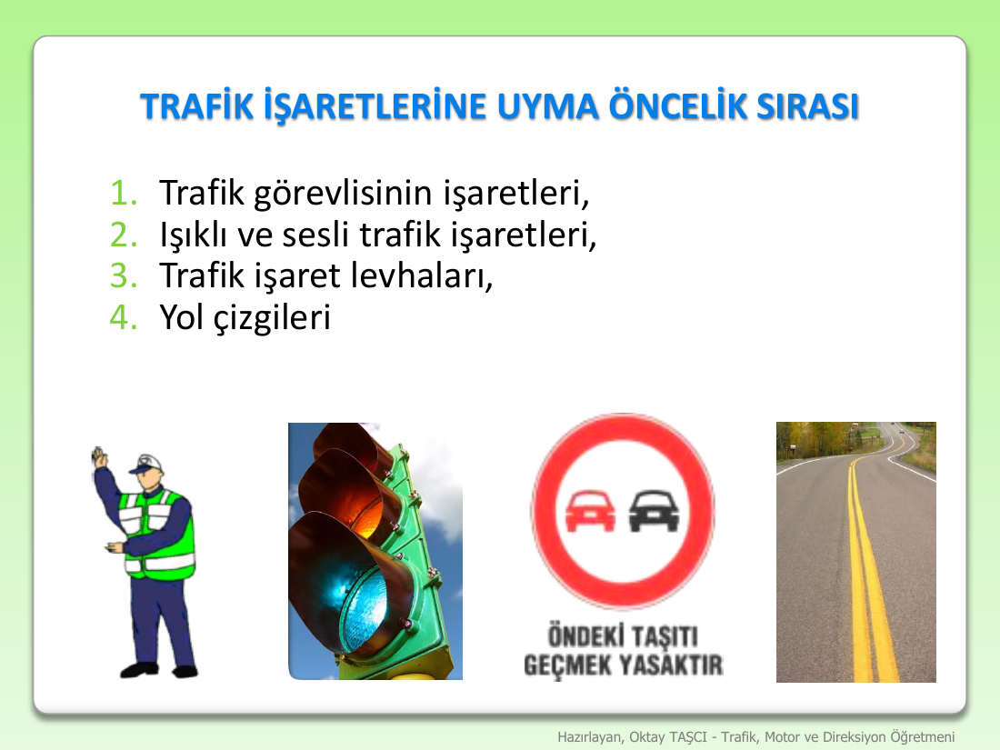
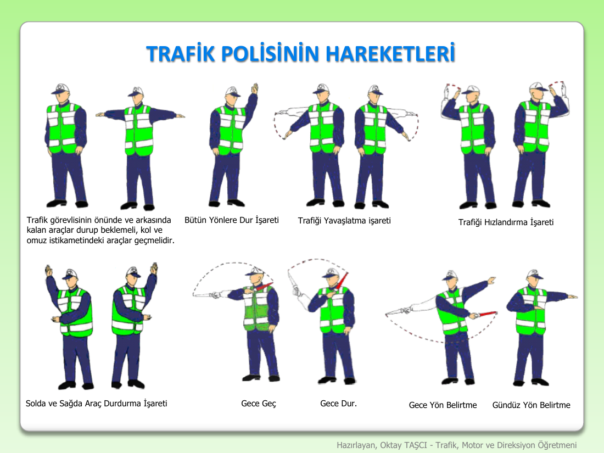

Trafik İşaretleri — Öncelik Sırası, Polis İşaretleri, Karayolu Koruma
Last updated: 2026-04-15
Slides covered: 3 slides from 2026-04-15 class — Karayolu Yapısı ve Trafik İşaretlerinin Korunması · Trafik İşaretlerine Uyma Öncelik Sırası · Trafik Polisinin Hareketleri
1. Overview — Görev (Purpose)
When you're driving, you'll face multiple sources of instruction at once: a police officer, a traffic light, a sign on a pole, painted lines on the ground. The KTK defines a strict hierarchy so there's never ambiguity about which to obey — and the exam tests that hierarchy in almost every paper. On top of that, every driver and pedestrian is legally obliged to protect the road surface and the signs themselves — damaging or obstructing them carries heavy fines.
This file covers three tightly related topics:
- Karayolu ve trafik işaretlerinin korunması — the duty not to damage, obstruct, or remove road structure or signs
- Öncelik sırası — the 4-level sign hierarchy (human > machine > levha > ground)
- Trafik polisinin hareketleri — the standard police hand signals drivers must recognize
2. SLIDE 1 — Karayolu Yapısı ve Trafik İşaretlerinin Korunması

What the slide showed
A yellow warning box titled "KARAYOLU YAPISI VE TRAFİK İŞARETLERİNİN KORUNMASI" with three dense paragraphs of prohibitions. Each paragraph cites the ceza (fine), puan (penalty points) and Ceza Listesi No. Below the text, a photo showing a "DUR" sign partially wrapped/covered by a parked car.
Clean English explanation
Three separate rules, each with its own penalty:
Rule 1 — No damaging, obstructing, or spilling on the road
Karayolu yapısı üzerine, trafiği güçleştirecek, tehlikeye sokacak veya engel yaratacak, trafik işaretlerinin görülmelerini engelleyecek şekilde bir şey koymak, atmak, dökmek, bırakmak ve benzeri hareketlerde bulunmak yasaktır.
(It is forbidden to place, throw, pour, leave, or similarly act on the road surface in a way that obstructs traffic, creates danger, creates obstacles, or blocks traffic signs from being seen.)Penalty: Ceza 5.662 TL, Puan 10, Ceza Listesi No 14
Rule 2 — No removing/damaging signs (repair obligation)
Karayolu yapısı, trafik işaretleri ve karayoluna ait diğer yapı ve tesisler üzerine yazarak, çizerek veya başka şekillerde bozmak, yerlerini değiştirmek yasaktır.
Meydana gelen tehlike ve engeller, ilgili kuruluşlar ve zabıtaca ortadan kaldırılır; bozukluk ve eksiklikler sorumlu yol yapım ve bakımından sorumlu kuruluşlarca derhal giderilir, zarar karşılıkları ve masrafları sorumlulara ödettirilir.
(It is forbidden to deface, damage, or displace the road structure, traffic signs, or other road-related installations by writing, drawing, or any other means. Dangers/obstacles shall be removed by responsible authorities; repair costs are charged to the responsible party.)
Rule 3 — No decoys / fake signs / obstruction of sign visibility
Karayolu dışında, kenarında veya karayolu sınırı içinde almadan, trafik işaretlerinin görünmelerini engelleyecek, anlamlarını değiştirecek veya güçleştirecek, yanıltacak veya trafik için tehlike veya engel yaratacak şekilde levha, ışık, işaret, ağaç, parmaklık, direk vb. dikmek, koymak veya bulundurmak yasaktır.
(Outside the road, on its edges, or within its boundaries, it is forbidden to erect, place, or keep any board, light, sign, tree, railing, or pole that blocks, alters, complicates, misleads, or creates danger for traffic signs.)Penalty: Ceza 58.943 TL, Ceza Listesi No 16
Critical exam fact
Two different fines to remember:
- 5.662 TL + 10 puan — putting/throwing/leaving things on the road that block traffic or obscure signs (Rule 1, Ceza Listesi No 14)
- 58.943 TL — erecting fake/misleading structures or objects near the road that interfere with traffic signs (Rule 3, Ceza Listesi No 16) — ~10× larger because it's intentional sign-interferenceRepair obligation: damages to the road/signs are fixed by the responsible authority (karayolları), but the cost is charged back to whoever caused the damage.
3. SLIDE 2 — Trafik İşaretlerine Uyma Öncelik Sırası (the hierarchy)

What the slide showed
A title "TRAFİK İŞARETLERİNE UYMA ÖNCELİK SIRASI" with a numbered list (1–4), and four illustrative photos below: a police officer directing traffic, a traffic light + speaker, a round "ÖNDEKİ TAŞITI GEÇMEK YASAKTIR" sign, and a yellow-marked road surface.
The 4-level hierarchy
| Rank | Source | Turkish | Example |
|---|---|---|---|
| 1 | Traffic police officer | Trafik görevlisinin işaretleri | Polis memuru el-kol hareketleri |
| 2 | Light/sound signals | Işıklı ve sesli trafik işaretleri | Trafik lambası, sesli sinyal |
| 3 | Sign boards | Trafik işaret levhaları | "Dur", "Park yasak", hız levhaları |
| 4 | Road markings | Yol çizgileri | Şerit çizgileri, yaya geçidi, ok işaretleri |
Clean English explanation
The rule is "human beats machine, machine beats sign, sign beats ground".
- A police officer on the intersection overrides everything else. If the light is green but the officer signals you to stop, you stop. If the sign says "no left turn" but the officer waves you left, you go left.
- A light/sound signal overrides signs and road markings. If the traffic light is red, you stop even if there's no "DUR" sign and the lane lines say go.
- A sign board overrides road markings. If a "30 km/h" sign is posted where the road is otherwise marked as a highway, you drop to 30.
- Road markings are the baseline — lowest priority — but still binding when nothing higher is present.
Critical exam fact
Memorize the ladder in order: Polis → Işık/Ses → Levha → Çizgi. The most common exam question gives you a conflict (e.g., green light but officer signals stop) and asks which you obey — the answer is always the higher-ranked source.
Single hardest mistake: thinking a sign board overrides a traffic light. It does not. A red light beats a "no U-turn" sign — the light is rank 2, the sign is rank 3.
Mnemonic: İnsan > Makine > Tabela > Yer (Human > Machine > Board > Ground).
4. SLIDE 3 — Trafik Polisinin Hareketleri (police hand signals)

What the slide showed
Eight numbered poses of a traffic officer in a yellow safety vest, each with a short caption. Two rows of four.
The 8 signals you must recognize
A. The default stance — arm-and-shoulder line
Caption on slide: "Trafik görevlisinin önünde ve arkasında kalan araçlar durup beklemeli; kol ve omuz istikametindeki araçlar geçmelidir."
(Vehicles in front of and behind the officer must stop and wait; vehicles along the arm-and-shoulder line may proceed.)
This is the baseline rule for an officer at an intersection.
- Vehicles in front of the officer (facing his chest) → STOP
- Vehicles behind the officer (facing his back) → STOP
- Vehicles on the arm/shoulder axis (approaching from his left or right side along the line his arms trace) → GO
This single rule answers ~80% of police-signal exam questions. Draw a cross through the officer: the line along his arms = go-line, the perpendicular line (front/back) = stop-line.
A2. Arms-down variant (same meaning)
Hoca (2026-04-15): "Kollar böyle de olsa aşağı doğru da ya da şöyle açmış olsa dahi de aynı anlama geliyor."
Whether the officer holds both arms straight out (shoulder height) or lets them hang at 45 degrees downward, the rule is identical: arm-axis = go, front/back = stop. The exam may show the arms-down variant to trip students who only memorized the arms-out pose.
B. Bütün Yönlere Dur İşareti — "Stop to all directions"
Both arms raised straight up. Everyone in all four directions stops. Total intersection freeze. Used before the officer switches which axis has priority.
Hoca's live addition (2026-04-15) — dual meaning:
"Bu herkes için dur işaretidir. Aynı zamanda ikinci bir anlamı daha var: daha önce dur uyuyor olanlar hazırlansınlar, ben bir sonraki hareketimde onlara yol vereceğim."
(This is a stop signal for everyone. But it also has a second meaning: those who were already waiting should prepare — the officer will give them the right of way in the next movement.)So "both arms up" = freeze everyone NOW + signal to the waiting axis: you're next.
C. Trafiği Yavaşlatma İşareti — "Slow down" signal
One arm extended and moved up-and-down. The officer is telling drivers on that axis to reduce speed but keep flowing.
D. Trafiği Hızlandırma İşareti — "Speed up" signal
Circular arm motion (winding). The officer is telling drivers to move through faster, typically when clearing congestion.
E. Solda ve Sağda Araç Durdurma İşareti — "Stop vehicles on left/right"
Arm extended directly toward the vehicle the officer wants to stop (a selective stop, not a full-intersection stop). Used to flag down individual drivers.
F. Gece Geç — "Night pass" (flashlight)
At night, the officer swings a lit red/green baton or flashlight in a specific motion meaning "you may proceed". The flashlight is waved along the direction of movement.
Hoca's live clarification (2026-04-15):
"Trafik zabıtası bu ışıklı çubuğu bir omzundan diğer omuzuna kadar yüz seksen derece sallıyorsa — omuzdan omuza — bu geçin demektir."
Key detail: the slow 180-degree shoulder-to-shoulder sweep = GO.
G. Gece Dur — "Night stop" (flashlight)
Flashlight held raised vertically and still, or swept across the vehicle's path, meaning "stop". Think of it as a vertical red wall of light.
Hoca's live clarification (2026-04-15):
"Ama trafik zabıtası bunu şu şekilde hızlı yapıyorsa ve siz karşıdan onu görüyorsanız, o zaman siz durun demektir."
Key detail: fast/rapid flashlight motion toward you = STOP. The speed of the motion distinguishes go from stop at night.
H. Gündüz / Gece Yön Belirtme — "Direction pointing, day/night"
Officer points in a specific direction with a clearly extended arm (day) or a moving flashlight beam (night) to direct traffic toward a specific exit / lane / detour.
Hoca's live clarification (2026-04-15):
"Gündüz: bir kolunu havaya kaldırıp, diğer kolunu göğüs hizasında tutup hangi yöne doğru gideceğinizi gösteriyor."
"Gece: ışıklı çubuğu bir yöne doğru sallıyorsa, siz o tarafa doğru gideceksiniz."
Critical exam fact
The "cross" rule is the single most tested concept:
- Officer's chest + back = STOP axis
- Officer's two shoulders / arms = GO axisIf an exam image shows 4 numbered cars at a 4-way intersection with the officer in the middle, work out which cars are on the front/back axis (= wait) vs which are on the arm axis (= go).
Raising both arms straight up = total stop. Everyone freezes, every direction.
Police hand signals outrank everything — green light, "DUR" sign, painted arrows, all of it. Rank 1 beats rank 2/3/4 always.
5. Why this matters for the exam
- Hierarchy recall: "Aşağıdakilerin hangisinin işaretlerine uyma önceliği diğerlerinden fazladır?" → Trafik görevlisi (police officer).
- Light vs sign conflict: "Kırmızı ışık yanarken 'dur' yasağı olmayan kavşakta ne yaparsınız?" → Durursunuz (light, rank 2, beats anything lower).
- Officer vs light conflict: "Trafik lambası yeşil yanarken polis durmanı işaret ederse ne yaparsınız?" → Durursunuz (officer, rank 1, beats light).
- The cross rule: A 4-way intersection image with an officer in the middle and 4 numbered vehicles — cars on front/back axis wait, cars on arm axis go.
- Bütün yönlere dur: Two arms up = all four directions stop.
- Night signals: Flashlight swung along direction = go; flashlight held still/vertical = stop.
- Karayolu koruma fines: 5.662 TL + 10 puan for throwing/placing things on the road; 58.943 TL for fake/misleading signs near the road.
- Damage repair obligation: damages are fixed by the authority, but the cost is charged to whoever caused the damage.
- Sign-obstruction trap: parking a vehicle in a way that blocks a traffic sign falls under Rule 1 (Ceza Listesi No 14).
6. Memorize These
Öncelik sırası (4-level hierarchy):
1. Trafik görevlisi (police officer)
2. Işıklı ve sesli işaretler (lights + sounds)
3. Levhalar (sign boards)
4. Yol çizgileri (road markings)Mnemonic: İnsan > Makine > Tabela > Yer.
The officer's cross:
- Önünde + arkasında (front + back axis) → DUR
- Kol + omuz istikametinde (arm + shoulder axis) → GEÇBütün yönlere dur işareti: İki kol yukarı → tüm yönler durur.
Karayolu yapısı üzerinde trafiği güçleştirecek veya işaretleri örtecek şey koymak, atmak, dökmek, bırakmak yasaktır. Ceza: 5.662 TL + 10 puan (Ceza Listesi No 14).
Trafik işaretlerini görünmez kılacak veya yanıltacak levha/ışık/işaret dikmek yasaktır. Ceza: 58.943 TL (Ceza Listesi No 16).
7. Consolidated Exam Vocabulary
| Turkish | English | Quick meaning |
|---|---|---|
| trafik görevlisi | traffic police officer | rank 1 in the hierarchy |
| trafik polisi | traffic police | synonym for trafik görevlisi |
| işaret | sign / signal | generic |
| el-kol hareketleri | hand and arm movements | what the officer uses |
| ışıklı işaret | light signal | traffic light |
| sesli işaret | sound signal | bell / buzzer |
| trafik lambası / trafik ışığı | traffic light | the three-color signal |
| trafik işaret levhası | traffic sign board | rank 3 |
| levha | sign / board | shorthand |
| yol çizgileri | road markings | rank 4 |
| şerit çizgisi | lane line | a specific road marking |
| öncelik sırası | priority order | the 4-level hierarchy |
| uyma | obeying / compliance | the duty to follow signs |
| önünde | in front of | (officer) |
| arkasında | behind | (officer) |
| kol istikameti | arm direction | the axis along which vehicles may go |
| omuz istikameti | shoulder direction | same axis, paraphrased |
| beklemek | to wait | what front/back vehicles must do |
| geçmek | to pass / proceed | what arm-line vehicles may do |
| bütün yönlere dur | stop to all directions | both arms raised |
| trafiği yavaşlatma | slowing traffic | up-down arm motion |
| trafiği hızlandırma | speeding traffic | circular arm motion |
| durdurma işareti | stop signal | arm extended at a specific vehicle |
| gece geç / gece dur | night go / night stop | flashlight signals |
| yön belirtme | direction pointing | officer indicating which way to go |
| karayolu yapısı | road structure | the physical road itself |
| trafik işaretlerinin korunması | protection of traffic signs | duty not to damage/obstruct |
| koymak, atmak, dökmek, bırakmak | to place, throw, pour, leave | the 4 forbidden verbs on Rule 1 |
| bozmak | to deface / damage | forbidden action on signs |
| yerlerini değiştirmek | to displace / relocate | forbidden action on signs |
| engellemek | to obstruct / block | forbidden action |
| yanıltmak | to mislead | forbidden action |
| tehlike yaratmak | to create danger | forbidden outcome |
| görülmelerini engellemek | to block visibility | (of signs) |
| ceza | fine / penalty | money penalty |
| puan | penalty points | added to driver record |
| ceza listesi no | penalty list number | official code (14, 16, 75, etc.) |
| sorumlu | responsible party | who pays the repair cost |
| masraflar sorumlulara ödettirilir | costs are charged to responsible parties | the repair-cost rule |
8. Cross-references
- Traffic signs themselves (uyarı, yasaklama, bilgi): pending — will be covered when that lecture lands.
- Geçiş üstünlüğü vs geçiş hakkı: 01-temel-kavramlar.md — the priority-type terminology.
- Okul taşıtı stop-light rule (other drivers must stop): 03-araç-tanımları.md § 9 — another "you must stop even if you weren't going to" rule.
- Karayolu definition (what counts as public road): 01-temel-kavramlar.md — the protection rules only apply to karayolu.